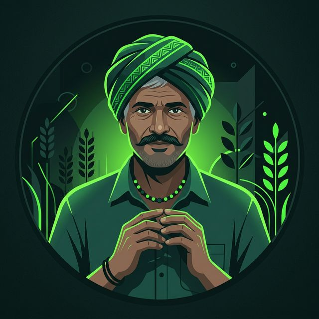
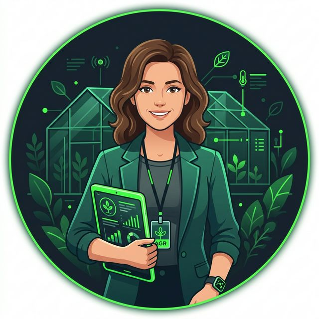
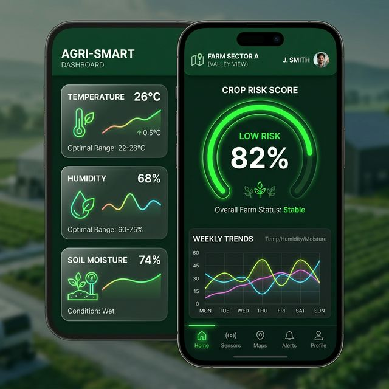
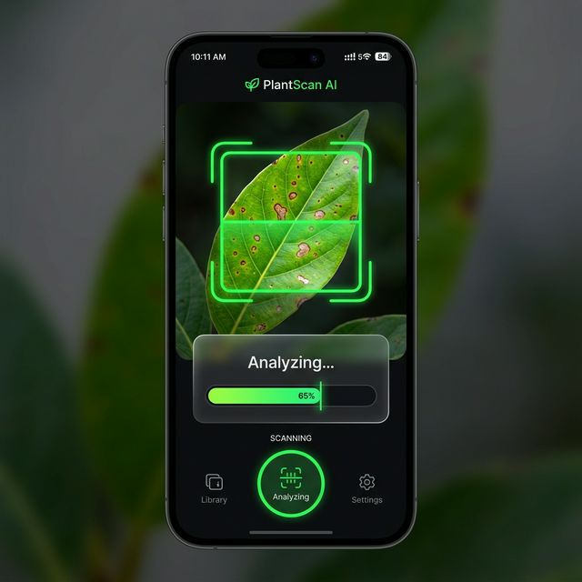
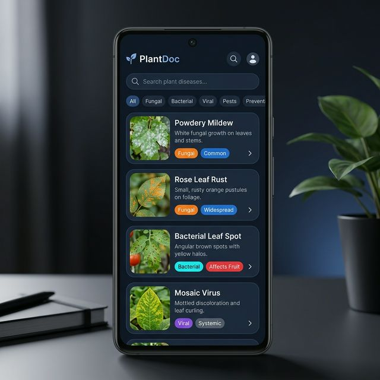

A product design case study detailing the end-to-end UX of a real-time plant health monitoring platform. This portfolio uses the exact same design system as the app itself.
Farmers juggle separate platforms for weather, soil, and disease detection. No single source of truth exists for daily operations.
Crop diseases are caught after visible damage — when yield loss is already significant and treatments are less effective.
IoT hardware requires IP configs and technical knowledge, alienating the primary user base of traditional farmers.


Moving from a mental model of "reading sensors" to "taking action." The app is flattened into 5 primary tabs, directly mapping to the user's daily journey.
Instead of burying the AI camera inside a menu, it sits at the bottom-center of the tab bar. It acts as the primary action button, acknowledging that diagnosis is the core value proposition.
From the Camera scanner, if a disease is found (e.g. Late Blight), users are deep-linked directly into the Encyclopedia for immediate treatment protocols — closing the loop between detection and cure.
A cohesive cross-platform visual language built directly on NativeWind/Tailwind. Use the sun/moon toggle in the navigation to test the actual design tokens live on this page.
Base: #0a0a0a. Surface: #122016. High-contrast neon green ensures visibility under direct sunlight in the fields.
Base: #f0f5f0. Surface: #ffffff. Warm sage tones mimic the natural environment of indoor agriculture.
Conducted 12+ field interviews and contextual inquiries with farmers and greenhouse operators across 3 regions.
Synthesized findings into overarching jobs-to-be-done: "I want to know if my plants are dying before I can see it with my own eyes."
Brainstormed solutions focusing on "Auto-Discovery" for hardware and an "Action-First" dashboard architecture instead of raw data tables.
Iterated from wireframes to React Native code, testing UI contrast under bright sunlight and the intuitiveness of the AI scanner flow.

A synthesized Risk Gauge replaces raw data tables. Contextual recommendation cards surface only when sensor values deviate from optimal ranges.

One-tap access to the camera with a targeted bounding box and transparent confidence scoring. Reduces the "black box" feeling of AI.

Searchable botanical disease repository linked directly to AI diagnoses with integrated treatment protocols.
Hardware auto-discovery eliminates IP entry completely. ESP32 sensory nodes appear in the app dashboard within 5 seconds of powering on.
Auto-discovery protocol eliminated manual IP tracking.
Status prioritized via glanceable Risk gauge hierarchy.
User trust established via transparent AI confidence scores.